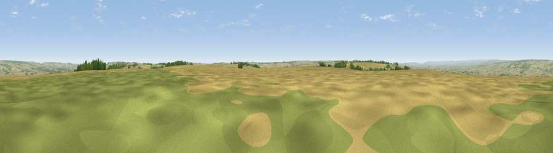

East Heslerton Brow
#11295 in England · top 21% of its area beats it · near West HeslertonWhere it is
The exact computed spot (SE 92263 74986). Click the marker for map links.
The view, rendered

A 360° render of this exact spot computed from the terrain model, tree cover and land cover — summer colours, afternoon light, calibrated against photographs of famous viewpoints. Real trees, hedges and buildings will differ in detail.
The panorama
Grey silhouette: terrain skyline in each direction (720 bearings, Earth curvature and refraction included). Dashed green: skyline with trees (+15 m) and buildings (+8 m) as obstacles. Blue strip: how far the ground is visible on each bearing.
Where the view opens
Wedge length = distance to the farthest visible ground on that bearing (vegetation-aware). Rings at 10, 25 and 50 km.
What fills the view
72% cropland · 18% grassland · 8% woodland ·
Angular shares of the visible panorama (visual magnitude), not map area. Landscape diversity 0.35 (0–1 Shannon).
Key numbers
More beautiful places nearby
The staircase of upgrades: each row has a higher view potential than everything closer. Driving times are estimates from straight-line distance, calibrated against real road routing — check an actual route before setting out.
| Place | Direction | Drive | Score |
|---|---|---|---|
| Viewpoint near West Heslerton | NNE · 0 km | ~1 min | 70.5 |
| Viewpoint near Settrington | WSW · 8 km | ~16 min | 72.3 |
| Seamer Beacon | NE · 15 km | ~27 min | 76.9 |
| Olivers Mount | NE · 17 km | ~29 min | 80.3 |
| Viewpoint near Ravenscar | NNE · 27 km | ~43 min | 87.3 |
| Viewpoint near Ravenscar | N · 27 km | ~44 min | 90.0 |
| Viewpoint near Easington | NNW · 48 km | ~69 min | 90.2 |
| The Knoll | SSW · 411 km | ~391 min | 91.0 |
54.16240, -0.58846 · source: dobih hill · position refined by local search. Computed location — check access rights before visiting.